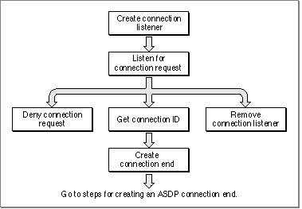

Connection Listeners
A connection listener or a connection-listening socket is a socket that accepts open-
connection requests and passes them along to its client, a connection server process,
for further processing. The server then selects a socket and requests ADSP to open a connection using that socket. The connection listener can also deny an open-connection request. By specifying filtering values for the network address of the requester, you can control which requests are accepted or denied. The use of a connection listener is typical of a server environment in which a server, such as a file server, is registered with NBP using a single name. Various connection ends throughout the network contact the server's connection listener with open-connection requests. The connection server can honor the requests, or it can deny them. It might deny a request, for example, when its resources are exhausted. Figure 5-4 shows the tasks for an ADSP connection listener in the order that applications commonly perform them.Figure 5-4 Standard tasks for an ADSP connection listener
